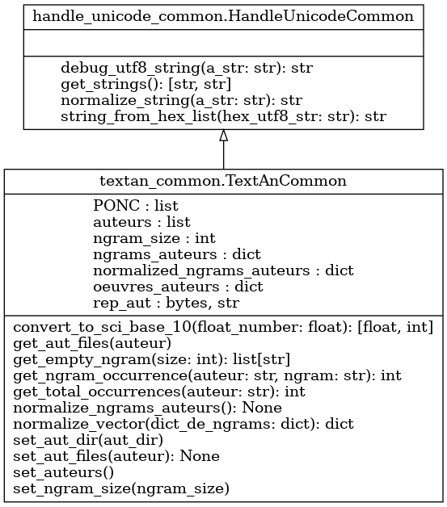

Module textan_common
Diagramme de classe
{kind=link}
Code du module
Ce fichier contient la classe TextAnCommon, utilisée pour la résolution de la problématique. Ce code ne devrait pas être modifié, il contient des méthodes utiles qui sont utilisées dans le gabarit de solution
Les méthodes apparaissant dans ce fichier définissent des fonctionnalités de base qui sont utilisées dans la classe TextAn.
La classe TextAn est invoquée par la classe TestTextAn (contenue dans test_textan.py) :
Tous les arguments requis sont présents et accessibles dans args (dans le fichier test_textan.py)
- Notevous pouvez tester votre code en utilisant les commandes :
« python test_textan.py »
« python test_textan.py -h » (donne la liste des arguments possibles)
« python test_textan.py -v » (mode « verbose », qui indique les valeurs de tous les arguments)
Copyright 2018-2025, F. Mailhot et Université de Sherbrooke
- class textan_common.TextAnCommon[source]
Bases :
HandleUnicodeCommonInitialize l’objet de type TextAn lorsqu’il est créé
- Args :
void : Utilise simplement les informations fournies dans l’objet Textan_config
- Returns :
void : ne fait qu’initialiser l’objet de type TextAn
Copyright 2018-2025, F. Mailhot et Université de Sherbrooke
- PONC = ['!', ';']
- static convert_to_sci_base_10(float_number: float) [<class 'float'>, <class 'int'>][source]
Retourne la mantisse et l’exposant en base 10 du nombre
- Args :
float_number (float) : le nombre à convertir en représentation scientifique (mantisse X 10 ^ puissance)
- Returns :
[mantisse (float), exposant (int)] : la mantisse (nombre à point flottant) et la puissance de 10
Copyright 2024-2025, F. Mailhot et Université de Sherbrooke
- get_aut_files(auteur)[source]
Obtient la liste des fichiers (avec le chemin complet) des oeuvres d’un auteur
- Args :
auteur (string) : le nom de l’auteur dont on veut obtenir la liste des oeuvres
- Returns :
oeuvres (Liste[string]) : liste des oeuvres (avec le chemin complet pour y accéder)
Copyright 2024-2025, F. Mailhot et Université de Sherbrooke
- static get_empty_ngram(size: int) list[str][source]
Retourne un ngramme vide de la taille indiquée (liste contenant des chaînes de caractères vides)
- Args :
size (int) : le nombre de mots vides dans la liste ngramme
- Returns :
ngram (liste) : La liste de mots vides
Copyright 2024-2025, F. Mailhot et Université de Sherbrooke
- get_ngram_occurrence(auteur: str, ngram: str) int[source]
Retourne le nombre d’occurrences du n-gramme pour cet auteur
- Args :
auteur (string) : le nom de l’auteur ngram (objet de type ngram) : le n-gramme dont on désire la fréquence
- Returns :
int : retourne ne nombre d’occurrences du n-gramme pour l’auteur donné
Copyright 2024-2025, F. Mailhot et Université de Sherbrooke
- get_total_occurrences(auteur: str) int[source]
Retourne le nombre total d’occurrences de n-grammes pour cet auteur
- Args :
auteur (string) : le nom de l’auteur
- Returns :
int : retourne ne nombre total d’occurrences pour l’auteur donné
Copyright 2024-2025, F. Mailhot et Université de Sherbrooke
- normalize_ngrams_auteurs() None[source]
Normalise tous les vecteurs de n-grammes de chacun des auteurs
- Args :
- (void)Tout se trouve dans l’objet
(la liste d’auteurs, ainsi que les vecteurs de n-grammes de chacun)
- Returns :
(void) : Le tableau self.normalized_ngrams_auteurs est créé avec les vecteurs de n-grammes normalisés
Copyright 2025, F. Mailhot et Université de Sherbrooke
- normalize_vector(dict_de_ngrams: dict) dict[source]
Normalize le vecteur (dictionnaire), en divisant chaque occurrence par la taille totale
- Args :
dict_de_ngrams (dict) : le vecteur de n-grammes (dict) en question
- Returns :
(dict) : Une nouvelle version normalisée du dictionnaire est retournée
Copyright 2024-2025, F. Mailhot et Université de Sherbrooke
- set_aut_dir(aut_dir)[source]
Définit le nom du répertoire qui contient l’ensemble des répertoires d’auteurs
- NoteL’appel à cette méthode
extrait la liste des répertoires d’auteurs et les ajoute à self.auteurs
extrait la liste des oeuvres de chaque auteur et l’ajoute à self.oeuvres_auteurs[auteur]
- Args :
aut_dir (string) : Nom du répertoire (peut être absolu ou bien relatif au répertoire d’exécution)
- Returns :
void : ne fait que définir le nom du répertoire qui contient les répertoires d’auteurs
Copyright 2018-2025, F. Mailhot et Université de Sherbrooke
- set_aut_files(auteur) None[source]
Met en mémoire la liste des fichiers (avec le chemin complet) des oeuvres d’un auteur
- Args :
auteur (string) : le nom de l’auteur dont on veut obtenir la liste des oeuvres
- Returns :
void : La liste des oeuvres de l’auteur est ajoutée dans le dictionnaire self.oeuvres_auteurs
Copyright 2024-2025, F. Mailhot et Université de Sherbrooke
- set_auteurs()[source]
Obtient la liste des auteurs, à partir du répertoire qui les contient tous
- Notele champ self.rep_aut doit être prédéfini :
Par défaut, il contient le répertoire d’exécution du script
Peut être redéfini par la méthode set_aut_dir
- Returns :
void : ne fait qu’obtenir la liste des répertoires d’auteurs et modifier la liste self.auteurs
Copyright 2018-2025, F. Mailhot et Université de Sherbrooke
- set_ngram_size(ngram_size)[source]
Indique que l’analyse et la génération de texte se fera avec des n-grammes de taille ngram
- Args :
ngram (int) : Indique la taille des n-grammes (1, 2, 3, …)
- Returns :
void : ne fait que mettre à jour le champ ngram
Copyright 2018-2025, F. Mailhot et Université de Sherbrooke
Note
Documentation créée le 20 févr. 2025.